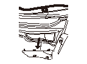
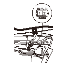
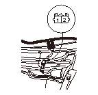

熱線入りフロント ウインド熱線の点検
L.カウル トップ リッド（A）を取外す。
熱線入りフロント ウインドから2Pカプラの接続を外す。
イグニッション スイッチをON（
II
）にする。
熱線入りフロント ウインド スイッチをONにする。

熱線入りフロント ウインド2Pカプラ（A）のNo.1（＋）端子とNo.2（－）端子間にバッテリ電圧があることを確認する。
•
バッテリ電圧がない場合は、次の項目を点検する。
-
熱線入りフロント ウインド リレー
-
熱線入りフロント ウインド スイッチ不良
-
コードの断線および端子の接続状態
-
アース不良（G401）
•
バッテリ電圧がある場合は、ステップ
6
へ進む。
イグニッション スイッチをOFFにする。

熱線入りフロント ウインドに2Pカプラ（A）を接続する。
イグニッション スイッチをON（
II
）にする。
熱線入りフロント ウインド2PカプラのNo.2端子とNo.1端子間の導通を確認する。導通がない場合は、熱線の断線、熱線の修理またはフロント ガラスを交換する。
